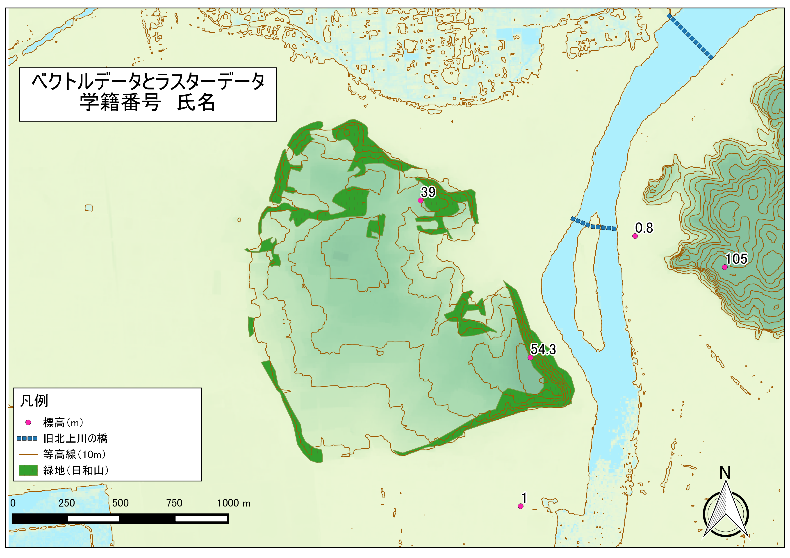

課題：空間データの統合・修正
この実習は、既存のラスタデータの結合による新規ラスターデータ作成と背景地図をトレースした新規ベクトルデータ作成を行うものです。実習で使われる用語や概念は、[地理情報科学教育用スライド（GIScスライド）]の4章を参照してください。 手順とGISオープン教材のラスタデータの分析の教材を参考に、完成例のような地図が作成できれば、実習完了となります。GIS初学者は、本教材を進める前にGISの基本概念の教材を確認しておいてください。
実習用データ 実習データは、国土地理院の基盤地図情報からダウンロードした宮城県石巻市周辺の5ｍDEMをエコリスのツールを用いて変換したものです。座標系は世界測地系の平面直角座標系に統一しています。
国土地理院 「基盤地図情報 基本項目 石巻周辺 （574142、574143、574152、574153） 基盤地図情報 数値標高モデル 5ｍメッシュ 石巻周辺 （574142、574152）」
ダウンロードと変換の手法は、既存データの地図データと属性データ教材とラスタデータの分析教材を参考とする。座標系の変換手法は空間データの教材を参考とする。
地理院タイル（国土地理院）
タイルの利用は、QGISビギナーズマニュアルの教材を参考とする。
Menu
課題1
ラスタデータのクリップと等高線作成
この実習では、既存のラスタデータを用いて任意の範囲で切り抜く処理と対象範囲内の等高線抽出および標高値の取得を行います。以下の手順と空間データの統合・修正教材を参考に学習を行い、作成した等高線と地物情報表示ツールで任意地点の標高値が取得できれば実習完了です。
手順
既存データの地図データと属性データの教材を参考に、基盤地図情報から5ｍDEMをダウンロードする。
ラスタデータの分析の教材を参考に、データを変換後にQGISで読み込む。
ラスタデータを結合した後、旧北上川右岸の日和山を中心とし、ラスタデータを任意の範囲で切り抜き、新規ラスタの配色をプロパティから調整する（任意の値で設定）。
クリップしたラスタデータを用いて、10m間隔で等高線を抽出する。
地物情報表示ツールをQGISビギナーズマニュアル:各種ボタンについてで確認した後、ツールを起動し任意の地点の標高を調べる。
※ レイヤウィンドウでクリップしたラスタを選択した状態で、地物情報表示ツールのアイコンをクリックする。調べたい地点をクリックすると別ウィンドウにレイヤ情報（標高）が表示される。
課題2
新規ベクトルデータの作成
地理院タイル（東日本大震災被災地震災後オルソ画像（2012年10月～2013年5月撮影））を用いて、下記の手順と空間データの統合・修正の教材を参考に、完成例のような地図を作成してください。課題1で作成したラスタデータがあれば利用し、なければ地理院タイル（標準地図）を利用してください。
完成例

手順
課題1でクリップしたラスタデータをQGISに読みこむ。
QGISビギナーズマニュアル:TileLayerPluginのインストールの教材を参考に、地理院タイル（東日本大震災被災地震災後オルソ画像（2012年10月～2013年5月撮影））を読み込む。
2.で読み込んだ空中写真を利用して、画像の上から日和山の植生が多くみられる部分のポリゴンを作成する（おおまかでよい）。属性は、id(Integer,幅10)のみでよい。 ※ポリゴンの新規作成は、作成後右クリックで新規レイヤとして反映される。
ポイントの作成：地理院タイル（標準地図等）や課題1のデータを利用し、任意の5地点の標高を調べポイントを作成する。属性は、id(Integer,幅2)、地名(String,幅20)、標高(Real,幅５〜６,精度2~3)とし、属性テーブルは、Id(通し番号)、付近の地名（もしくは建物名）、標高値を記入する。
※ 標準地図から標高値を求める場合は、地図から標高点を探す。ラスタから標高値を求める場合は、レイヤウィンドウでレイヤを選択した状態で、地物情報表示ツールのアイコンをクリックする。調べたい地点をクリックすると別ウィンドにレイヤ情報が表示される。
- ラインの作成：タイルレイヤプラグインを用いて背景地図（東日本大震災被災地震災後オルソ画像（2012年10月～2013年5月撮影））を表示し、旧北上川の橋をトレースする（なぞる）。
※ラインの新規作成は、作成後右クリックで新規レイヤとして反映される。
- 課題1で作成した等高線があれば追加し、レイヤごとに色分けやラベルの設定をする。ラベルは、プロパティ＞ラベル から標高値もしくは、地名で設定する。その後、地図をレイアウトする（背景地図は、任意で選択すること。）。
完成例で使用したデータ
本ページで使用しているデータの出典については、該当する教材よりご確認ください。